Bengaluru
Bengaluru, the capital of Karnataka, boasts historical places like Bangalore Palace, Lalbagh Botanical Garden, and Tipu Sultan's Summer Palace.
 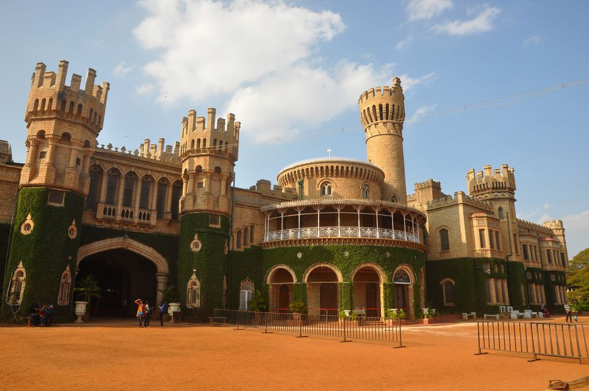
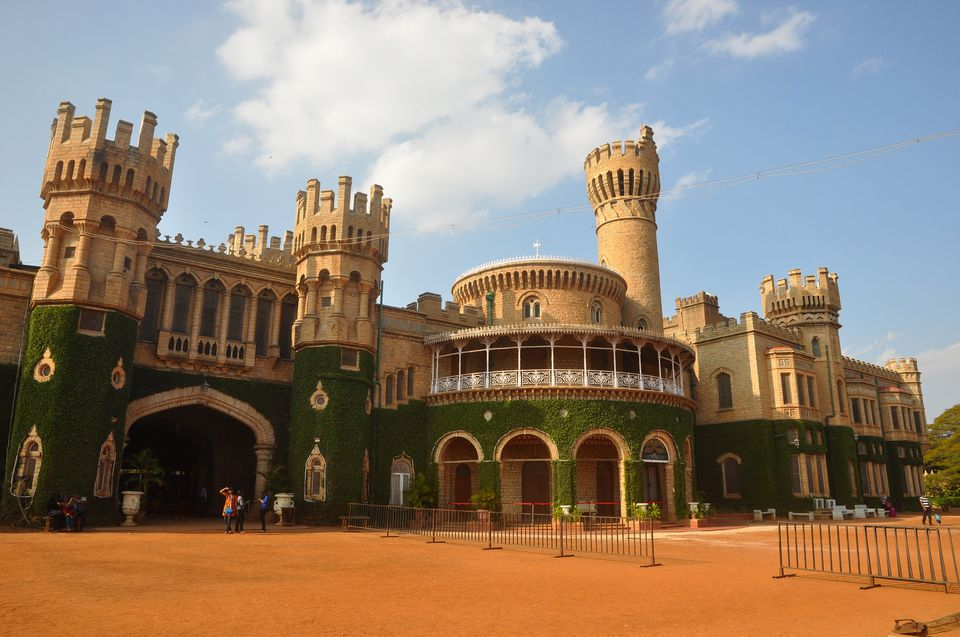
 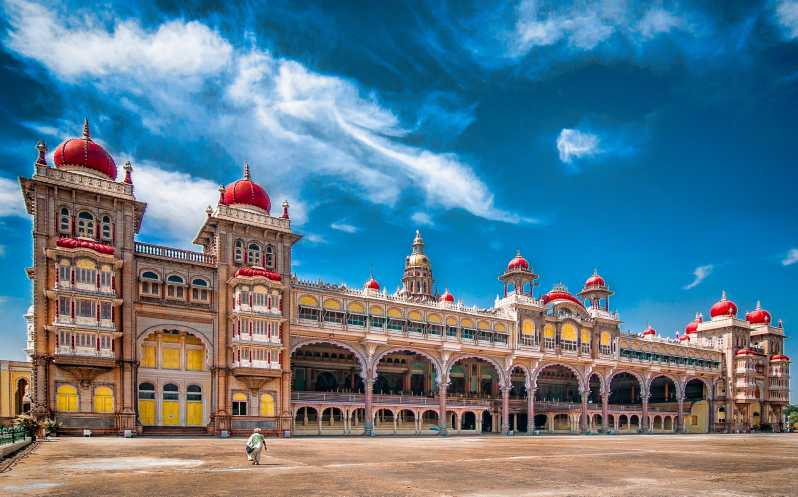
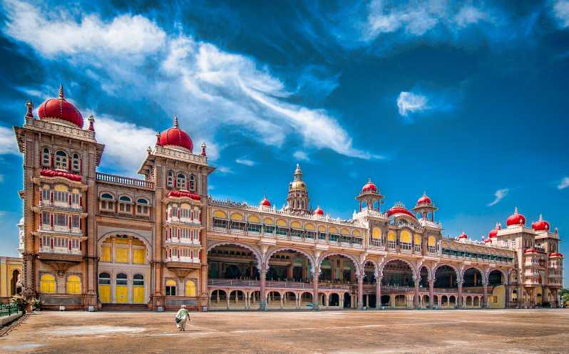

Bengaluru, the capital of Karnataka, boasts historical places like Bangalore Palace, Lalbagh Botanical Garden, and Tipu Sultan's Summer Palace.
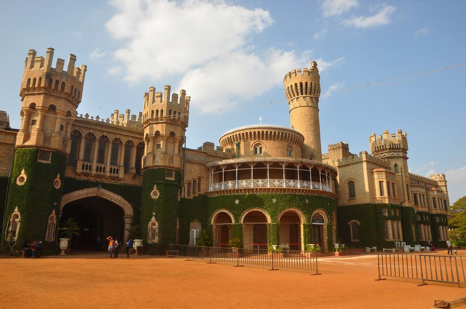
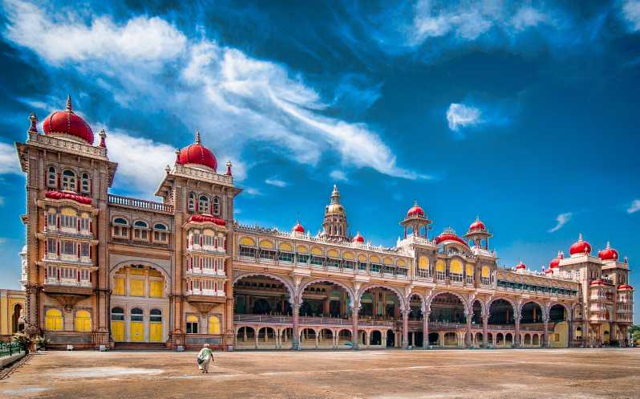
Mysuru is known for its historical Mysore Palace, Chamundi Hills, and St. Philomena's Church. The Mysore Zoo and Brindavan Gardens are popular attractions.
 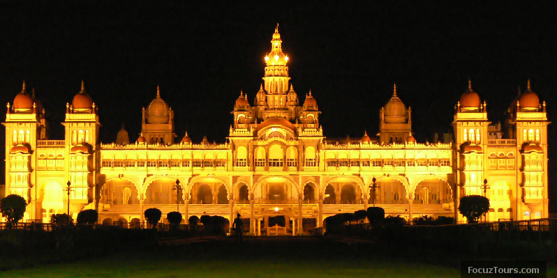
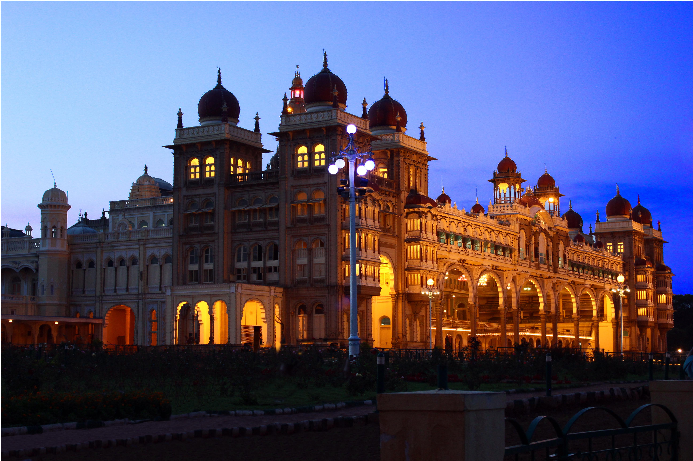
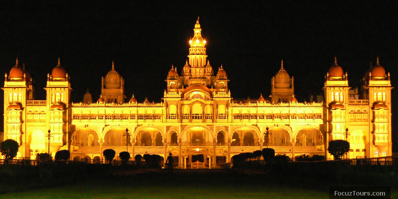
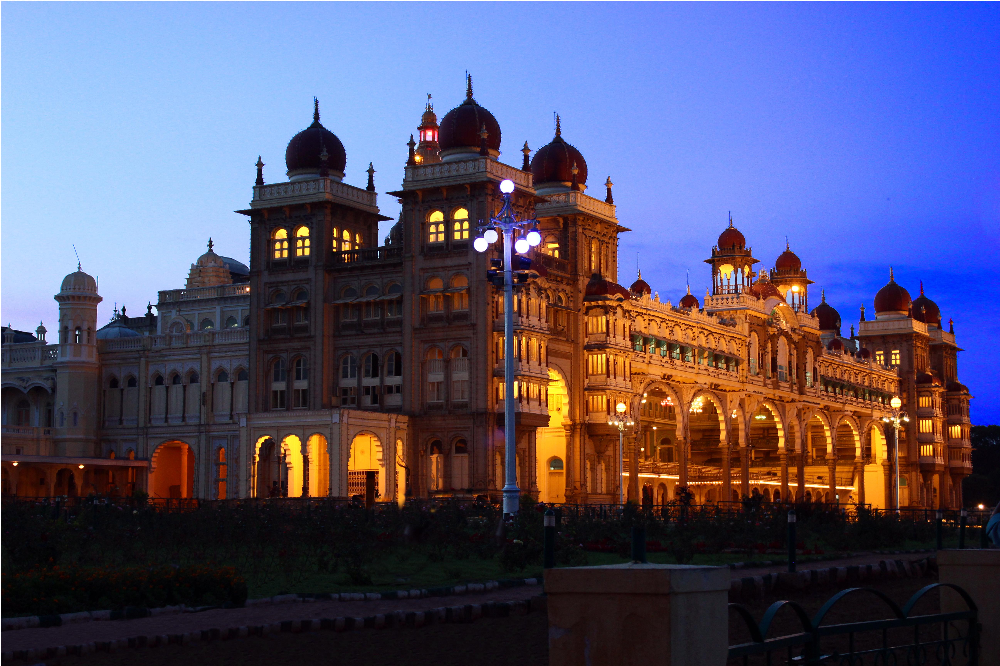
Hampi is a UNESCO World Heritage Site with historical ruins, including Virupaksha Temple, Vijaya Vittala Temple, and Hampi Bazaar.
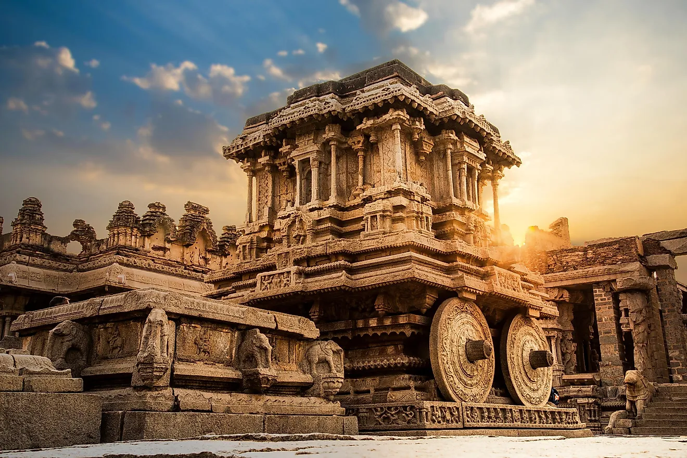
 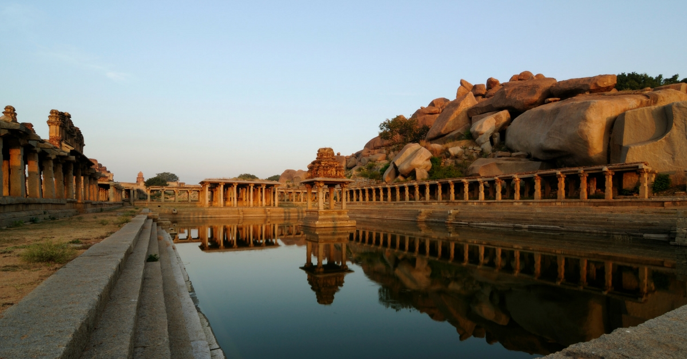
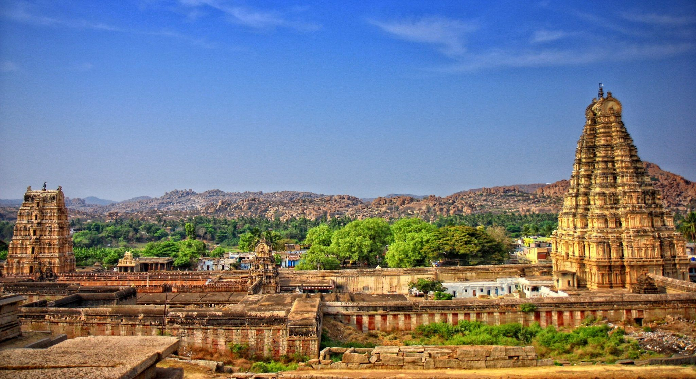
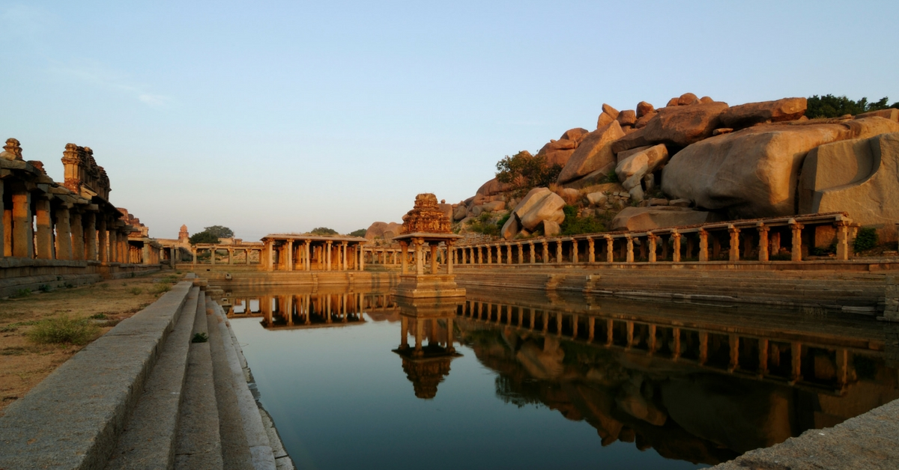
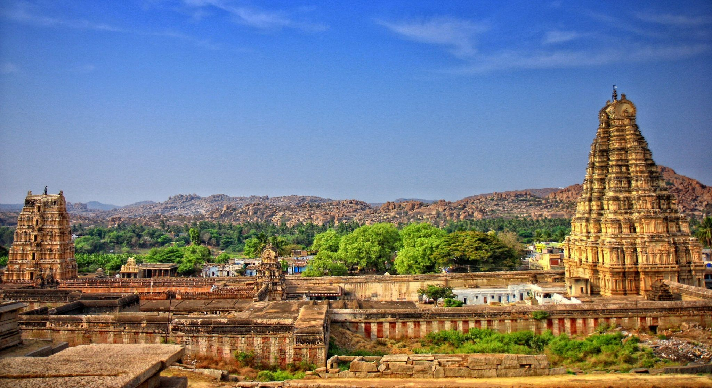
 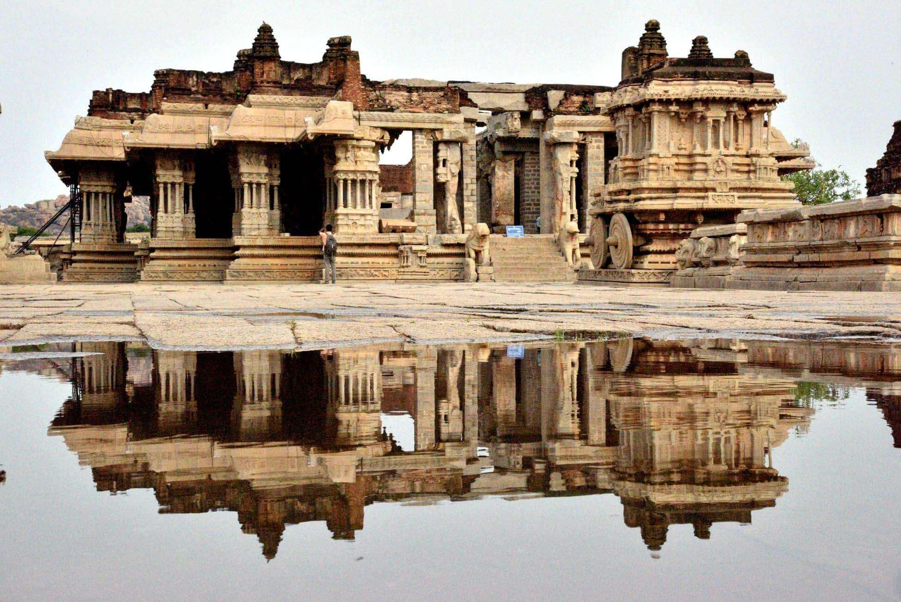
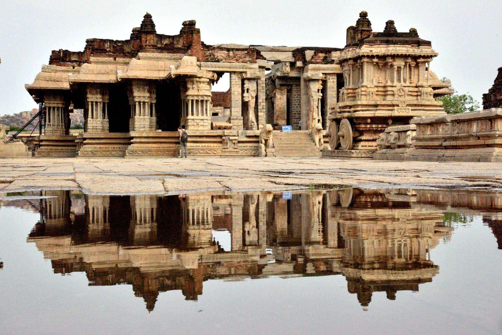